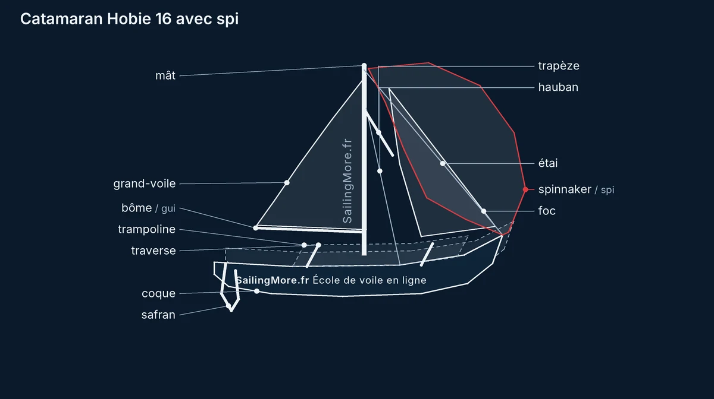
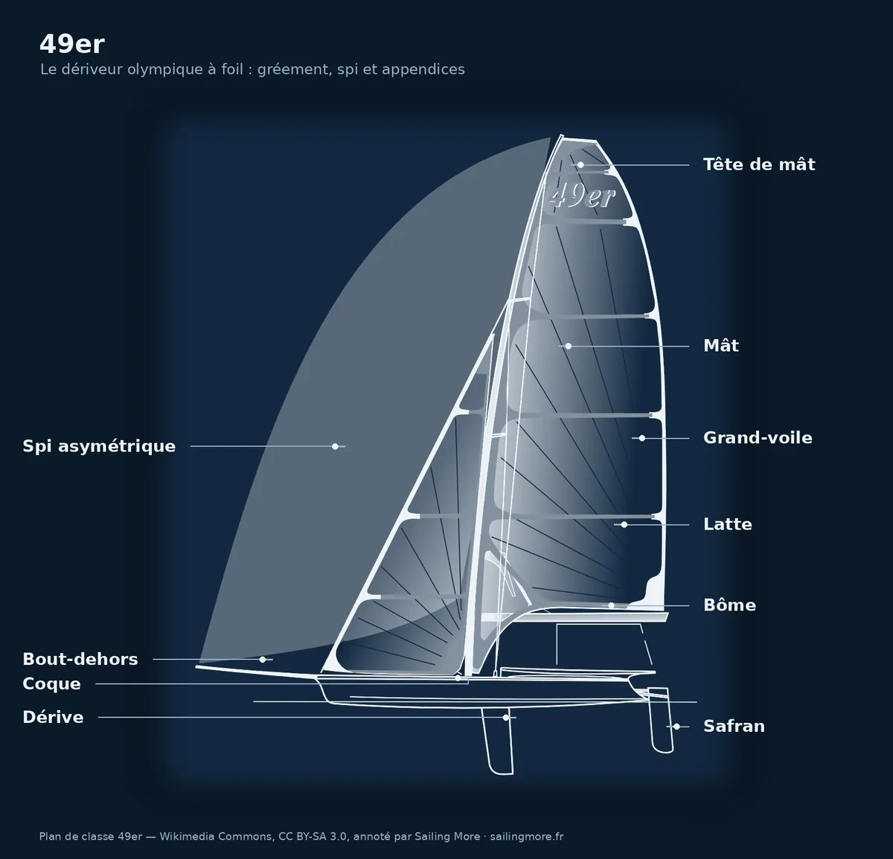
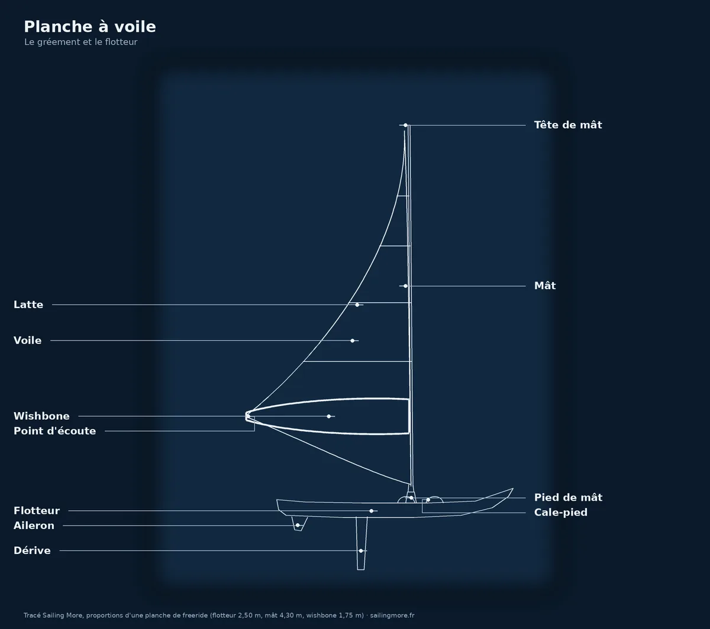
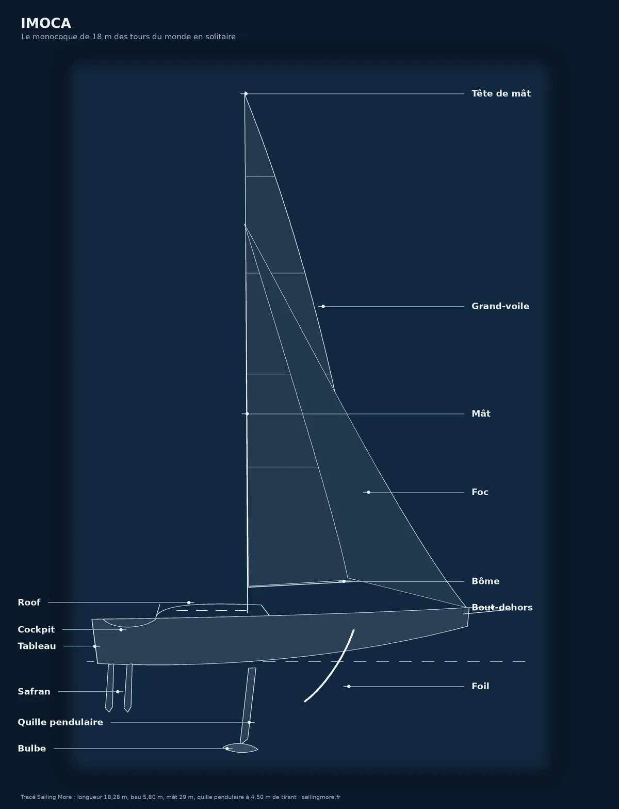

Voilier Habitable X35
Longueur10,6 m
Équipageplusieurs équipiers, selon le programme
Gréementsloop fractionné, grand-voile et foc
Sériedessinée en 2005, lancée en 2006 ; monotype reconnu par World Sailing
Comprendre le vocabulaire et les allures : les cours théoriques de voile

Catamaran Hobie 16 avec spi
Longueur5,05 m
Équipage2 équipiers
Gréementcatamaran à trapèzes ; grand-voile, foc, spinnaker en option
Sériepremiers bateaux en 1969 ; le spi est un kit hors jauge de la série
Comprendre le vocabulaire et les allures : les cours théoriques de voile


Dériveur Laser
Longueur4,2 m
Équipage1 personne
Gréementune seule voile, sans foc ni spinnaker
Sériedessiné en 1970 ; voile de 7,06 m² pour le gréement standard (ILCA 7)
Comprendre le vocabulaire et les allures : les cours théoriques de voile

Skiff 49er
Longueur4,99 m
Équipage2 équipiers
Gréementskiff à deux trapèzes ; grand-voile, foc et spinnaker asymétrique sur bout-dehors
Sérieclasse olympique depuis les Jeux de Sydney, en 2000
Comprendre le vocabulaire et les allures : les cours théoriques de voile


Planche à voile iQFOiL
Longueur2,2 m
Équipage1 personne
Gréementplanche à voile à foil ; voile fixée au flotteur par le pied de mât
Sérieconçue en 2018 ; classe olympique à Paris 2024 et Los Angeles 2028
Comprendre le vocabulaire et les allures : les cours théoriques de voile


Kite Formula Kite
Équipage1 personne
Gréementaile à caissons fermés tenue par des lignes, barre, harnais, planche à foil
Sérieclasse olympique : kiteboard masculin et féminin aux Jeux de Los Angeles 2028
Comprendre le vocabulaire et les allures : les cours théoriques de voile

Wingfoil
Équipage1 personne
Gréementaile gonflable tenue à la main, sans mât ni lignes ; flotteur à foil
Sériepas de série olympique : le wingfoil se pratique en loisir et en compétition fédérale
Comprendre le vocabulaire et les allures : les cours théoriques de voile

IMOCA
Longueur18,28 m
Équipageen solo ou en équipage, selon la course
Gréementmonocoque de 60 pieds, mât-aile, foc, quille pivotante à bulbe et foils
Sérieassociation de classe créée en 1991 ; foils apparus au Vendée Globe 2016-2017
Comprendre le vocabulaire et les allures : les cours théoriques de voile


Ultim
Longueur32 m
Équipageen solo ou en équipage, selon la course
Gréementtrimaran à foils, mât-aile, grand-voile et foc ; largeur maximale de 23 m
Sérieclasse Ultim 32/23 créée officiellement en 2018 par la Fédération française de voile
Comprendre le vocabulaire et les allures : les cours théoriques de voile